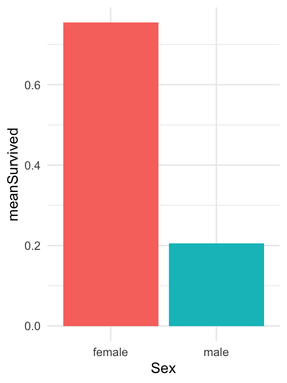
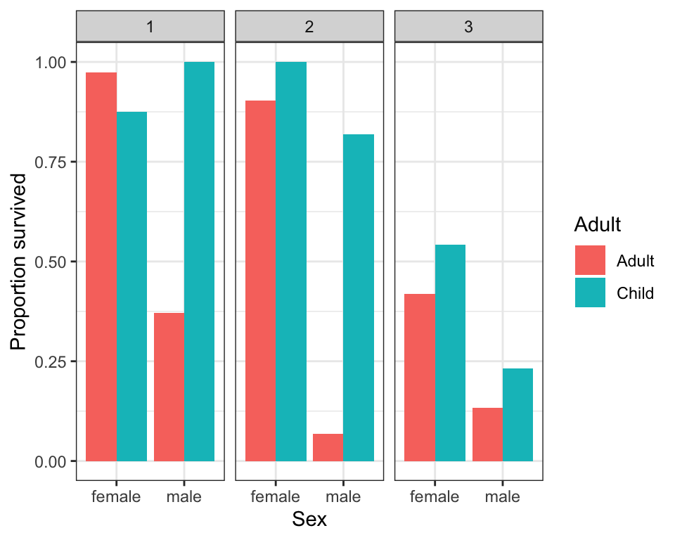
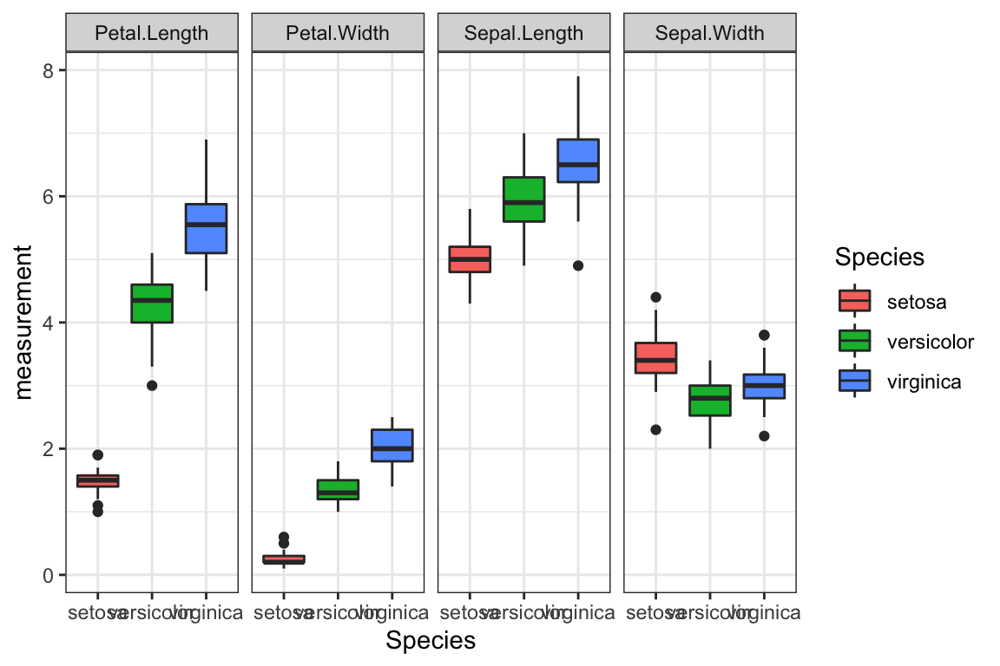
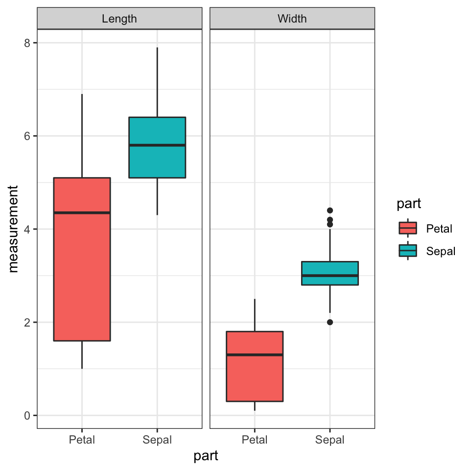
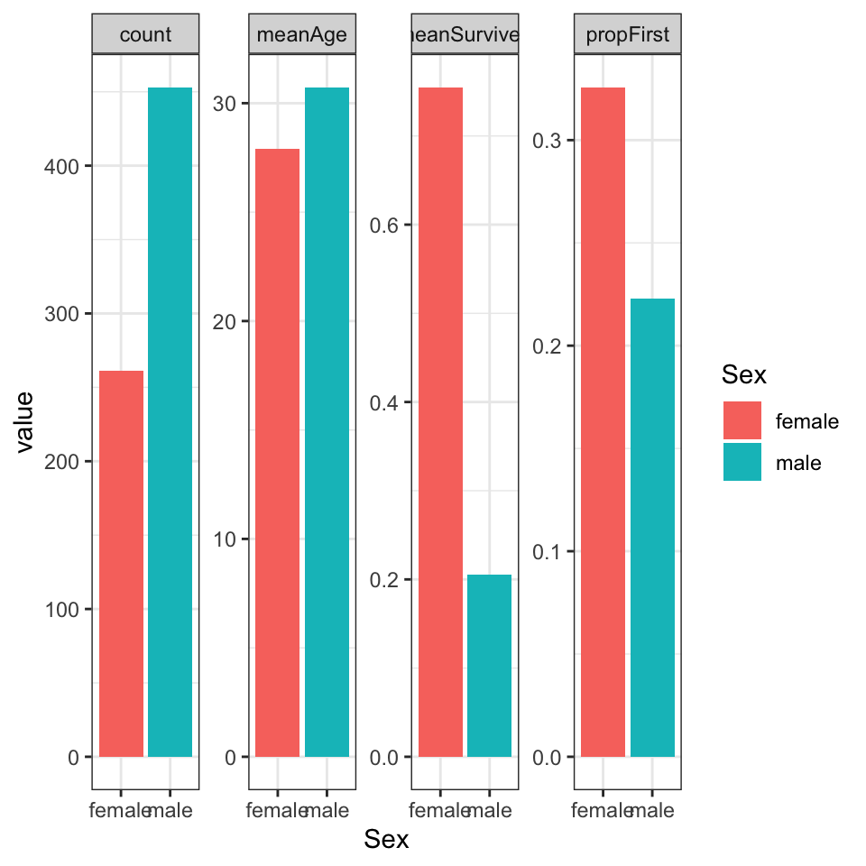

Chapter 6 Bearbejdning dag 2

6.1 Indledning og læringsmålene
I dag skal vi arbejde videre med tidyverse, især på pakken dplyr og tidyr, som kan bruges til at andre på strukturen af de data, således at det passer til den struktur, som kræves for at lave plots med ggplot2.
6.1.1 Læringsmålene
I skal være i stand til at
- Benytte kombinationen af
group_by()ogsummarise(). - Forbinde
tidyversekode ogggplot2kode sammen for at svare på spørgsmål om datasættet. - Forstå forskellen mellem
wideoglongdata og brugepivot_longer()til at facilitere plotting
6.1.2 Videoer
- Video 1 - vi skal kig lidt nærmere på
group_by()+summarise()og forbindetidyversekode ogggplot2kode sammen med %>%/+.
Link her hvis det ikke virker nedenunder: https://player.vimeo.com/video/546910681
- Video 2 - wide/long data forms og
pivot_longer()og bruge den i ggplot2
Link her hvis det ikke virker nedenunder: https://player.vimeo.com/video/546910660
- Video 3 - eksempel med titanic summary statistics og facet_wrap()
Link her hvis det ikke virker nedenunder: https://player.vimeo.com/video/547096274
6.2 dplyr: group_by() med summarise()
Man kan lave summary statistics med funktionen summarise(). Man plejer at kombinere summarise() med group_by(), som anvendes til at opdele datasættet efter en eller flere variabler. Her kan vi begynde at stille spørgsmål omkring vores data. For eksempel: havde mænd eller kvinde en højre sandsynlighed for at overleve tragedien?
Lad os starte med løsningen med tapply til at udregne proportionen af mænd og kvinde der overlevede: her opdele vi kolonnen Survived efter kolonnen Sex og tager middelværdien, som resultater i proportionen der overlevede efter køn (da Survived er kodet sådan at 1 betyder at man overlevede og 0 betyder at man ikke overlevede).
#tapply løsning
tapply(titanic_clean$Survived,titanic_clean$Sex,mean)## female male
## 0.7547893 0.2052980Lad os skifter over til den tidyverse løsning. Lad os tage udgangspunkt i summarise(): som et eksempel af hvordan man bruger funktionen, vil vi beregner en variable der hedder “medianFare” som er lig med median(fare).
titanic_clean %>%
summarise("medianFare"=median(Fare))## # A tibble: 1 × 1
## medianFare
## <dbl>
## 1 15.7Vi får faktisk en ny dataramme her, med kun variablen som vi lige har specificeret. Vi er interesseret i proportionen, der overlevede, så vi behøver at tage middelværdien af variablen Survived. Lad os gøre det med summarise():
titanic_clean %>%
summarise(meanSurvived = mean(Survived))## # A tibble: 1 × 1
## meanSurvived
## <dbl>
## 1 0.406Få at svare på spørgsmålet er vi også nødt til at opdele efter kolonnen Sex. Vi kan bruge den kombinering af group_by() og summarise() - vi opdele efter Sex ved at anvende funktionen group_by() og derefter bruger summarise() til at oprette en kolon der hedder meanSurvived, der viser proportionen der overlevede for female and male.
#tidyverse løsning
titanic_clean %>%
group_by(Sex) %>%
summarise(meanSurvived = mean(Survived))## # A tibble: 2 × 2
## Sex meanSurvived
## <chr> <dbl>
## 1 female 0.755
## 2 male 0.205Lad os tage resultatet fra ovenpå og visualiserer det i et barplot, som i nedenstående:
titanic_clean %>%
group_by(Sex) %>%
summarise(meanSurvived = mean(Survived)) %>%
ggplot(aes(x=Sex,y=meanSurvived,fill=Sex)) +
geom_bar(stat="identity",show.legend = FALSE) + theme_minimal()
6.2.1 Reference af summary() funktioner
Nogle fuktioner man ofte bruge med summary() (der er mange andre muligheder).
| fuktion | beskrivelse |
|---|---|
mean() |
to give us the mean value of a variable. |
sd() |
to give us the standard deviation of a variable. |
min() |
giving us the lowest value of a variable. |
max() |
giving us the highest value of a variable. |
n() |
giving us the number of observations in a variable. and many more. |
first() |
first values |
6.2.2 Flere summary statistic på én gang
Vi kan også lave flere summary statistics på én gang. For eksempel, lad os anvende funktionen group_by med Sex igen, men beregner flere forskellige summary statistics:
titanic_clean_summary_by_sex <- titanic_clean %>%
group_by(Sex) %>%
summarise(count = n(), #count
meanSurvived = mean(Survived), #middelværdi survived
meanAge = mean(Age), #middelværdi age
propFirst = sum(Pclass==1)/n()) #proportionen i første klass
titanic_clean_summary_by_sex## # A tibble: 2 × 5
## Sex count meanSurvived meanAge propFirst
## <chr> <int> <dbl> <dbl> <dbl>
## 1 female 261 0.755 27.9 0.326
## 2 male 453 0.205 30.7 0.223Igen kan denne summary table bruges som et datasæt til at lave et plot med ggplot2. Bemærk at her bruger vi stat="identity", fordi vi skal ikke tælle observationerne op, men bare plot præcis de tal som er i datarammen på y-aksen. I nedenstående laver vi barplots for meanAge og propFirst - de er plottet ved at bruge to forskellige ggplot kommandoer og bemærk, at det er plottet ved siden af hinanden med en funktion der hedder grid.arrange() fra R-pakken gridExtra.
plotA <- ggplot(data=titanic_clean_summary_by_sex,aes(x=Sex,y=meanAge,fill=Sex)) +
geom_bar(stat="identity",show.legend = FALSE) +
theme_minimal()
plotB <- ggplot(data=titanic_clean_summary_by_sex,aes(x=Sex,y=propFirst,fill=Sex)) +
geom_bar(stat="identity",show.legend = FALSE) +
theme_minimal()
library(gridExtra)
grid.arrange(plotA,plotB,ncol=2) #plot both together
Vi kan se, at females var i gennemsnit lidt yngere end males, og havde en højere sandsynlighed for at være i første klass. Et interessant spørgsmål er, hvordan man kan lave ovenstående plots uden at bruge to forskellige ggplot kommandoer - altså, en automatiske løsning hvor vi kan plotte flere summary statistiks med kun én ggplot kommando. Vi kommer til at se hvordan man gøre det med at første lave datasættet om til long form.
6.2.3 Mere kompliceret group_by()
Lad os også beregne hvor mange passagerer der var efter både deres klass, og hvor de gik ombord skibet:
titanic_clean %>%
group_by(Embarked, Pclass) %>% # group by multiple variables...
summarise(count = n())## `summarise()` has grouped output by 'Embarked'. You can override using the
## `.groups` argument.## # A tibble: 10 × 3
## # Groups: Embarked [4]
## Embarked Pclass count
## <chr> <int> <int>
## 1 "" 1 2
## 2 "C" 1 74
## 3 "C" 2 15
## 4 "C" 3 41
## 5 "Q" 1 2
## 6 "Q" 2 2
## 7 "Q" 3 24
## 8 "S" 1 108
## 9 "S" 2 156
## 10 "S" 3 290Man kan se at de flest gik om bord i Southampton (S), men der var også forholdsvis mange første klass passagerer der gik om bord i Cherbourg (C). Lad os gå videre med vores Survived eksempel og beregne proportionen der overlevede efter de tre variabler Adult, Sex og Pclass.
titanic_clean_summary_survived <- titanic_clean %>%
mutate(Adult = ifelse(Age>=18,"Adult","Child")) %>%
group_by(Adult,Sex,Pclass) %>%
summarise(meanSurvived = mean(Survived))## `summarise()` has grouped output by 'Adult', 'Sex'. You can override using the
## `.groups` argument.titanic_clean_summary_survived## # A tibble: 12 × 4
## # Groups: Adult, Sex [4]
## Adult Sex Pclass meanSurvived
## <chr> <chr> <int> <dbl>
## 1 Adult female 1 0.974
## 2 Adult female 2 0.903
## 3 Adult female 3 0.418
## 4 Adult male 1 0.371
## 5 Adult male 2 0.0682
## 6 Adult male 3 0.133
## 7 Child female 1 0.875
## 8 Child female 2 1
## 9 Child female 3 0.543
## 10 Child male 1 1
## 11 Child male 2 0.818
## 12 Child male 3 0.233Og så kan vi også bruge resultatet ind i en ggplot, hvor vi kombinerer de tre variabler og adskiller efter Pclass:
ggplot(titanic_clean_summary_survived,aes(x=Sex,y=meanSurvived,fill=Adult)) +
geom_bar(stat="identity",position = "dodge") +
facet_grid(~Pclass) +
ylab("Proportion survived") +
theme_bw()
6.3 Tidyr pakke - Wide og Long data
Tidy data findes i to former: wide data og long data. Som vi vil se, kan det være nyttigt at transformere de data fra den ene form til den anden, for fk. at facilitere et plot med ggplot2. Indenfor R-pakken tidyr er der funktioner som kan bruges til at lave disse transformeringer.
Inden vi begynde at kigge lidt nærmere på tidyr skal vi beskrive, hvad betyder long data og wide data.

Figure 6.1: source: https://www.garrickadenbuie.com/project/tidyexplain/
Wide data: Her har man en kolon til hver variable og en række til hver observation. Det gøre de data nem at forstå og denne data type findes ofte indenfor biologi - for eksempel hvis man har forskellige samples (treatments, controls, conditions osv.) som variabler.
Long data: Med long data har man værdier samlet i en enkel kolon og en kolon som en slags nøgle, som fortæller også hvilken variable hver værdi hørte til i den wide format. Datasættet er stadig betragtet som tidy men informationen opbevares på en anden måde. Det er lidt sværer at læse men nemmere at arbejde med når man analyser de data.
Når man transformer data fra wide til long eller omvendt, kaldes det for reshaping.
6.3.1 Tidyr pakke - oversigt
Her er en oversigt over de fire vigtigste funktioner fra R-pakken tidyr.
tidr funktion |
Beskrivelse |
|---|---|
pivot_longer() |
short til long |
pivot_wider() |
long til short |
separate() |
opdele strings fra en kolon til to |
unite() |
tilføje strings sammen ind fra to til én kolon |
Vi fokuserer på funktionen pivot_longer(), da den er mest brugbar, men nævne kort de andre funktioner.
6.3.2 Wide -> Long med pivot_longer()
Lad os arbejde med datasættet Iris. Man få Iris` i long form med følgende kommando:
iris %>% pivot_longer(cols = -Species)
Figure 6.2: wide til long med Iris
Til venstre har vi målingerne i datasættet over fire forskellige kolonner som hedder Sepal.Length, Sepal.Width, Petal.Length og Petal.Width, og en ekstra kolon der skelne imellem de tre Species. Til højre har vi fået alle målingerne ind i en enkel kolon der hedder values, og så bruger man en anden ‘nøgle’ kolon der hedder name til at fortælle os om det er en måling for Sepal.Length eller Sepal.Width osv.
Man specificer cols=-Species, fordi det kun er kolonnerne med målinger som vi gerne vil have samlet i en enkel kolon, og det inkluderer så ikke Species.
Jeg kan kalde de kolonner navne for målingerne og nøglen til nogle andre en default: for eksempel i nedenstående skal målingerne hedde measurements og nøglen hedde trait.
iris.long <- iris %>% pivot_longer(cols = -Species,
names_to = "trait",
values_to = "measurement")
Man kan for eksempel bruge den long form den til at visualisere samtlige mulige boxplots opdelt efter Species og trait på samme plot:
ggplot(iris.long,aes(y=measurement,x=Species,fill=Species)) +
geom_boxplot() +
facet_grid(~trait) +
theme_bw()
6.3.3 separate()
Funktionen separate() fra pakken tidyr kan bruges til at opdele to forskellige dele som eksisterer i samme kolon. For eksempel, i iris har vi variabler med navne Sepal.Width, Sepal.Length osv. - man kan forestille sig, at opdele disse navne over to kolonner i stedet for en - fk. “Sepal” og “Width” i tilfældet af Sepal.Width. I nedenstående kan man se, hvordan man anvende separate().
iris %>%
pivot_longer(cols = -Species, names_to = "trait", values_to = "measurement") %>%
separate(col = trait, into = c("part", "measure"),sep = "\\.") %>%
head()## # A tibble: 6 × 4
## Species part measure measurement
## <fct> <chr> <chr> <dbl>
## 1 setosa Sepal Length 5.1
## 2 setosa Sepal Width 3.5
## 3 setosa Petal Length 1.4
## 4 setosa Petal Width 0.2
## 5 setosa Sepal Length 4.9
## 6 setosa Sepal Width 3Man specificerer variablen trait, og at det skal opdeles til to variabler part og measure. Vi angiver sep = "\\." som betyder, at vi gerne vil have part som delen af trait foran ‘.’ og measure som delen af trait efter .. Vi bruger “\.” til at fortælle, at vi er interesseret i punktum og ikke en “anonym character,” som punktum plejer at betyde i “string”-sprog. Man behøver faktisk ikke at specifice sep = "\\." i dette tilfælde - som standard kigger funktionen efter ‘non-character’ tegne og bruger dem til at lave opdelingen.
Samme resultat:
iris %>%
pivot_longer(cols = -Species, names_to = "trait", values_to = "measurement") %>%
separate(col = trait, into = c("part", "measure")) %>%
head()## # A tibble: 6 × 4
## Species part measure measurement
## <fct> <chr> <chr> <dbl>
## 1 setosa Sepal Length 5.1
## 2 setosa Sepal Width 3.5
## 3 setosa Petal Length 1.4
## 4 setosa Petal Width 0.2
## 5 setosa Sepal Length 4.9
## 6 setosa Sepal Width 3Bruger resultatet i et plot:
iris %>%
pivot_longer(cols = -Species, names_to = "trait", values_to = "measurement") %>%
separate(col = trait, into = c("part", "measure")) %>%
ggplot(aes(y=measurement,x=part,fill=part)) +
geom_boxplot() +
facet_grid(~measure) +
theme_bw()
Se også unite() som gøre de modsatte til separate().
6.4 Eksempel: Titanic summary statistics
Lad også tage vores Titanic summary statistic eksempel hvor man andvender de forskellige koncepter fra ovenstående.
group_by()ogsummarise()
Vi laver vores summary statistics som i ovenstående.
titanic_clean_summary_by_sex <- titanic_clean %>%
group_by(Sex) %>%
summarise(count = n(),
meanSurvived = mean(Survived),
meanAge = mean(Age),
propFirst = sum(Pclass==1)/n())pivot_longer()
Vi transformerer eller reshape datarammen fra wide data til long data. Vi vil få kun de summary statistics samlet i en enkel kolon, så variablen Sex ikke skal med.
titanic_clean_summary_by_sex %>% pivot_longer(cols=-Sex)## # A tibble: 8 × 3
## Sex name value
## <chr> <chr> <dbl>
## 1 female count 261
## 2 female meanSurvived 0.755
## 3 female meanAge 27.9
## 4 female propFirst 0.326
## 5 male count 453
## 6 male meanSurvived 0.205
## 7 male meanAge 30.7
## 8 male propFirst 0.223ggplot()medfacet_grid()
Vi kombinerer pivot_longer() med et plot af vores summary statistics og benytte facet_grid() til at separere ved de forskellige statistiker.
titanic_clean_summary_by_sex %>%
pivot_longer(cols=-Sex) %>%
ggplot(aes(x=Sex,y=value,fill=Sex)) +
geom_bar(stat="identity") +
facet_grid(~name) +
theme_bw()
facet_wrap()
Vi laver den sammen som ovenstående men specificerer facet_wrap() i stedet for facet_grid() - indenfor facet_wrap() kan man bruge indstillingen scales="free" som gøre, at de fire plots få hver deres egne akse limits.
titanic_clean_summary_by_sex %>%
pivot_longer(cols=-Sex) %>%
ggplot(aes(x=Sex,y=value,fill=Sex)) +
geom_bar(stat="identity") +
facet_wrap(~name,scales="free",ncol=4) +
theme_bw()
6.4.1 Demonstration af pivot_wider()
- Wide -> Long
titanic_clean_summary_by_sex %>%
pivot_longer(cols=-Sex)## # A tibble: 8 × 3
## Sex name value
## <chr> <chr> <dbl>
## 1 female count 261
## 2 female meanSurvived 0.755
## 3 female meanAge 27.9
## 4 female propFirst 0.326
## 5 male count 453
## 6 male meanSurvived 0.205
## 7 male meanAge 30.7
## 8 male propFirst 0.223- Wide -> Long –> Wide
titanic_clean_summary_by_sex %>%
pivot_longer(cols=-Sex) %>%
pivot_wider()## # A tibble: 2 × 5
## Sex count meanSurvived meanAge propFirst
## <chr> <dbl> <dbl> <dbl> <dbl>
## 1 female 261 0.755 27.9 0.326
## 2 male 453 0.205 30.7 0.2236.5 Problemstillinger
1) Lav quizzen - “Quiz - tidyverse - part 2.”
Vi øver os med titanic. Inlæs de data og lave oprydningen med følgende kode:
library(tidyverse)
library(titanic)
titanic <- as_tibble(titanic_train)
titanic_clean <- titanic %>%
select(-Cabin) %>%
drop_na()2) summarise(). Fra titanic_clean beregne den median alder af alle passagerer ombord skibet.
titanic_clean %>%
summarise(....) #rediger her- I samme kommando beregne også den maksimum alder og minimum alder, samt med den standard afvigelse af alder. Datarammen skal ser sådan ud:
## # A tibble: 1 × 4
## mean_alder max_alder min_alder sd_alder
## <dbl> <dbl> <dbl> <dbl>
## 1 29.7 80 0.42 14.53) group_by() og summarise(). Beregne samme summary statistics som i 2) men anvende group_by() til at først opdele efter variablen Pclass.
- Lave et barplot med
stat="identity"som viser den gennemsnitlige alder på y-aksen opdelt efterPclasspå x-aksen. - OBS: prøve at tilføje
fill=Pclasstil dit plot og kigge på farverne/legend. Hvad er skete? Kigg på datarammentitanic_clean(som skulle være entibbleher) og tjekke datatypen. - Gør variablen til en “factor” variable indenfor plottet.
4) group_by() og summarise(). Beregne samme summary statistics som i 2) men anvende group_by() til at først opdele efter både variablerne Pclass og Sex. Man få en advarsel “summarise() has grouped output by ‘Pclass’ …” som du kan se bort fra.
- Lave et barplot med
stat=="identity"som viser den gennemsnitlige alder opdelt efterPclass, adskilte efterSex(facet_grid())
5) Ekstra øvelse med group_by() og summarise(). Med titanic_clean som udgangspunkt angiv både Pclass og Embarked i group_by() og brug summarise() til at beregne de gennemsnitlige Fare til passagerene.
- OBS: Der er et par observationer med en blank værdi for “Embarked” - bruge
filter()i linjen før man anvendergroup_by()for at først få dem fjernet (Hint: benyt!=tegn). - Lav et barplot med
Embarkedpå x-aksen og den gennemsnitligeFarepå y-aksen og adskille efterPclass. - Hvilke gruppe betalte mest i gennemsnit for deres billet?
6) group_by() med tre variabler og summarise(). Afprøve en kombination med tre forskellige variabler indenfor group_by() og bruge summarise() til at beregne middelværdien for Age.
- Leg med at lave et plot for at visualisere de data. Idé: som mulighed kan man tilføje variabler til
facet_grid()- for eksempelfacet_grid(~Pclass + Sex).
6 recode() Tjekk kursus notaterne og se funktionen recode(). Afpøve den ved at ændre værdierne i variablen Embarked således at man få de fulde navne af de steder folk gik ombord skibet, i stedet for kun den første bogstav. Fra data beskrivelsen:
- Embarked: Where passengers boarded the titanic. C = Cherbourg, Q = Queenstown, S = Southampton).
7) pivot_longer()
Lave en ny dataramme fra
titanic_cleander viser tre summary statistics opdelt efter Survived: den gennemsnitlige alder, den gennemsnitligeFareog proportionen som er “male.”Benyt
pivot_longer()til at få de resulterende dataramme i Long form. Husk at angiv-Survivedda vi kun vil have vores beregnet værdier med.Bruge resultatet til at lav et barplot med
Survivedpå x-aksen ogvaluepå y-aksen (husk at angiv i plot, atSurviveder en factor).Anvend
facet_wrap()til at adskille efternameog bruger indstillingenscales="free".
8) Mere øvelse med pivot_longer()
Her er nogle fiktiv data om hjerterytmene for seks forskellige patienter, efter at have taget fire forskellige lægemidler:
heart_rate <- tibble("patient"=c("George","Sally","Henry","Peter","Charlotte","Jason"),"drugA"=c(72,84,64,60,74,88),"drugB"=c(74,84,66,58,72,87),"drugC"=c(80,88,68,64,78,88),"drugD"=c(68,76,64,58,70,72))
heart_rate## # A tibble: 6 × 5
## patient drugA drugB drugC drugD
## <chr> <dbl> <dbl> <dbl> <dbl>
## 1 George 72 74 80 68
## 2 Sally 84 84 88 76
## 3 Henry 64 66 68 64
## 4 Peter 60 58 64 58
## 5 Charlotte 74 72 78 70
## 6 Jason 88 87 88 72- Bruge
pivot_longer()til at få datasættet i Long form. Er der nogle kolonner som ikke skal med i den enkel kolon med værdier? Kalde den kolon med værdier “heartrate” og den nøgle kolon med variable-navne “drug.” - Bruge
group_by()ogsummarise()til at beregne den gennemsnitlige heartrate efter drug. - Lave et plot som viser den gennemsnitlige heartrate efter drug.
9) Pivot_wider() Vi har en tribble som jeg har kopiret fra https://r4ds.had.co.nz/index.html.
people <- tribble(
~name, ~names, ~values,
#-----------------|--------|------
"Phillip Woods", "age", 45,
"Phillip Woods", "height", 186,
"Jessica Cordero", "age", 37,
"Jessica Cordero", "height", 156,
"Brady Smith", "age", 23,
"Brady Smith", "height", 177
)Brug pivot_wider() på people. Vi er nødt til at specificer names_from og values_from indenfor pivot_wider() - prøv at angiv de relevante kolonner.
10) Separate() øvelse
Benytt funktionen
Separate()til at opdele variablenNameind til to variabler, “Surname” og “Rest” (Hint: brugesep=", "for at undgå, at man få en mellemrum lige før “Rest”).Anvend
Separate()en gang til, men for at opdele variablenRestinto to variabler, “Title” og “Names.” Hvad bruger man somsep? (Hint: husk at bruge “\\” foran en punktum).Optæll hvor mange der er i hver af de forskellige “Titles” og beregne også den maksimum og den minimum alder for hver “Title.”
11) Valgfri ekstra hvis man er færdig: lave en ny dataramme med alle passagerer, der hedder “Alice” eller “Elizabeth” (brug Google her).
6.7 Ekstra links
Cheatsheet: https://github.com/rstudio/cheatsheets/blob/master/data-import.pdf